Hier sind ein paar Benennungen, über welche man beim Auswerten von Daten stolpern kann:
Fahre mit der Maus über die Buttons, um die Beschreibungen zu sehen.

Terminologiemanagement bezeichnet das systematische Erfassen, Prüfen, Dokumentieren und Einsetzen von fachlichen Begriffen und Benennungen in einem Unternehmen oder einer Organisation. Ziel ist es, dafür zu sorgen, dass wichtige Begriffe (z.B.
Produktnamen, technische Bezeichnungen, Abkürzungen) einheitlich, korrekt und verständlich verwendet werden – in allen Texten, Sprachen und Abteilungen.
Kurz gesagt: Terminologiemanagement schafft klare, konsistente Fachsprache und vermeidet Missverständnisse.
| Benennung | Definition |
|---|---|
| Terminologie | Gesamtheit der fachlichen Benennungen und Begriffe eines bestimmten Fachgebiets oder Unternehmens. |
| Terminologiedatenbank | Zentrale, strukturierte Sammlung terminologischer Einträge (Begriffe, Benennungen, Definitionen, Zusatzinformationen), die zur Sicherstellung konsistenter Fachsprache genutzt wird. |
| Begriff | Gedankliche Einheit, die durch charakteristische Merkmale ein Objekt, einen Sachverhalt oder eine Vorstellung eindeutig beschreibt. |
| Benennung | Sprachliche Ausdrucksform eines Begriffs, z. B. ein Wort, eine Wortgruppe, ein Symbol oder eine Abkürzung. |
| Definition | Aussage, die den Inhalt eines Begriffs durch Beschreibung seiner wesentlichen Merkmale genau festlegt. |
Visuelle Kommunikation umfasst alle gestalterischen Elemente einer Marke. Dazu gehören Brand Guidelines, die Regeln für Farben, Typografie und Bildwelt definieren, das Corporate Design als visuelles Erscheinungsbild sowie die umfassende Corporate Identity, die Werte, Positionierung und Persönlichkeit des Unternehmens vermittelt.
 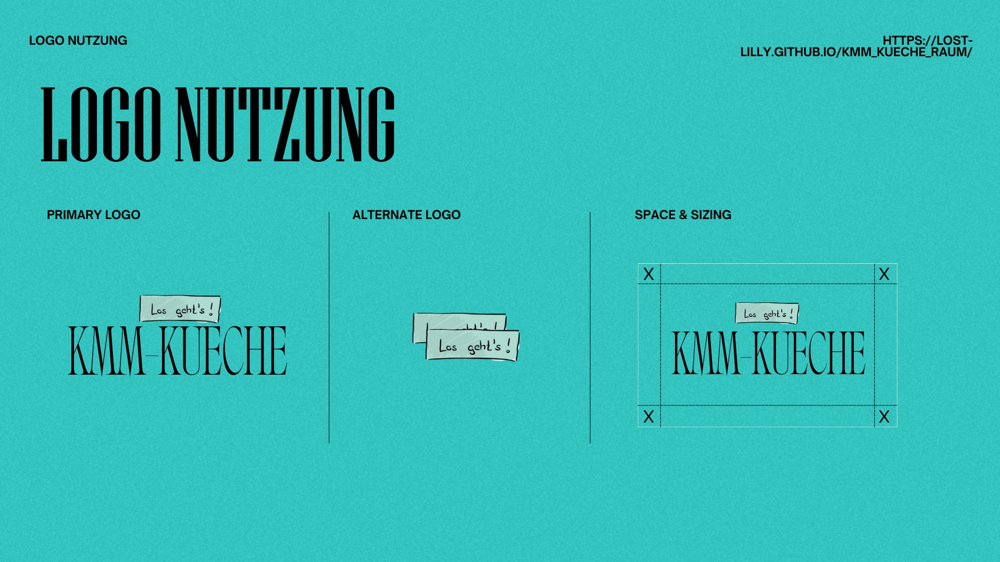
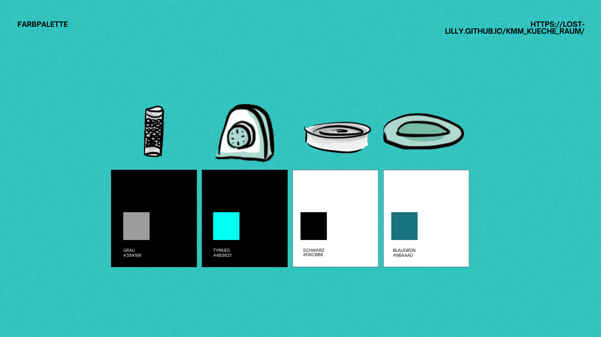
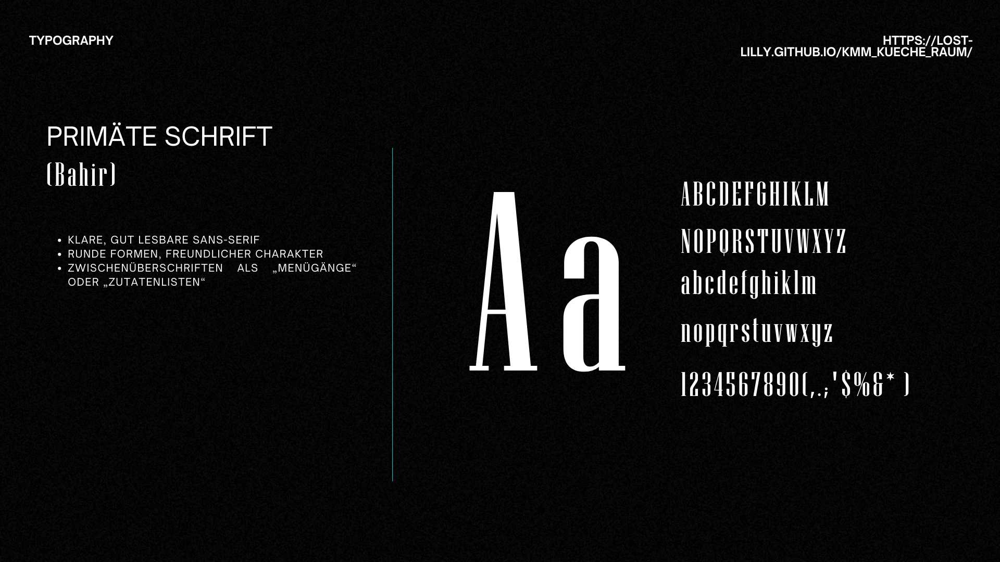
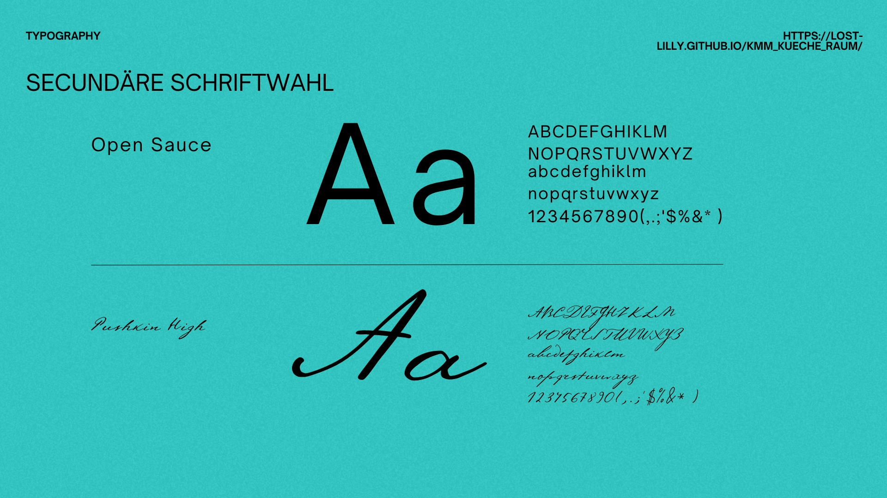
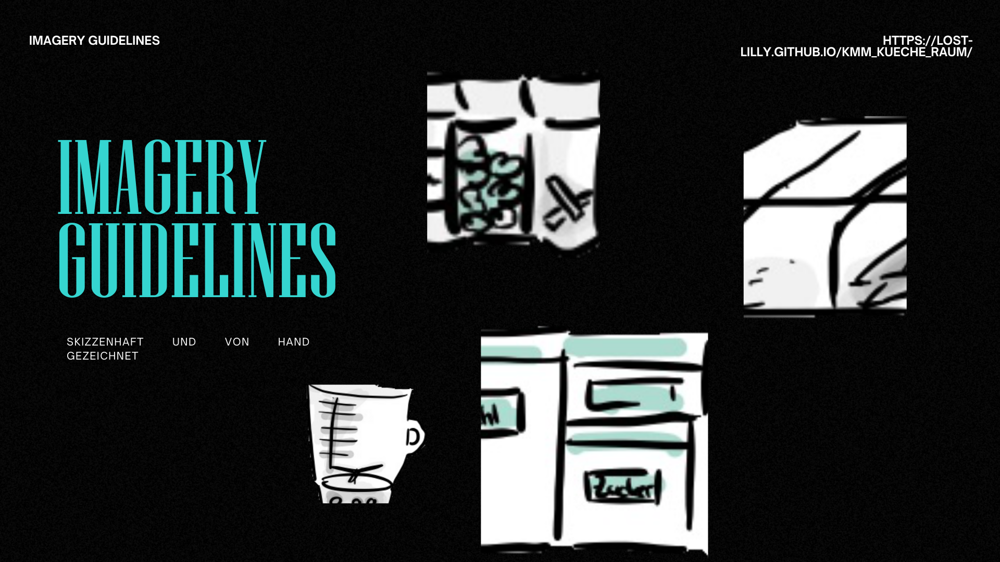
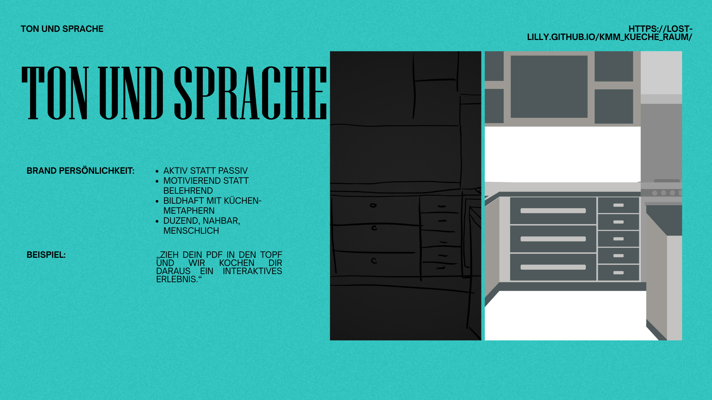
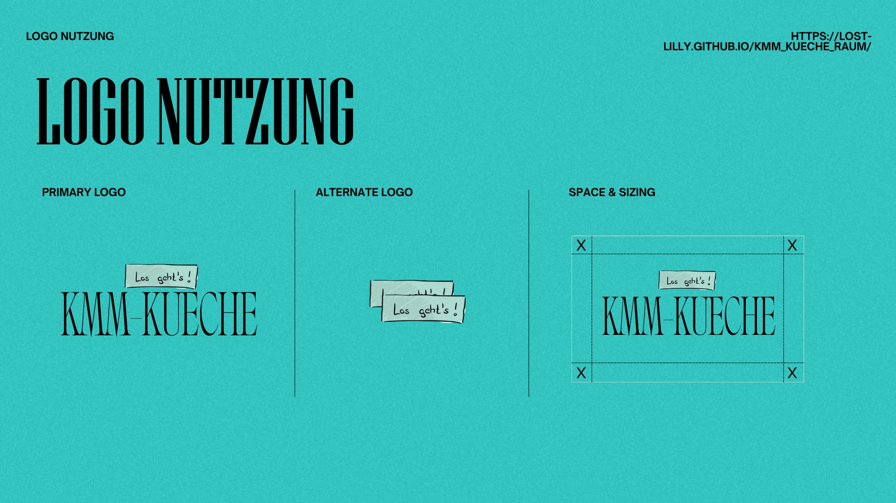
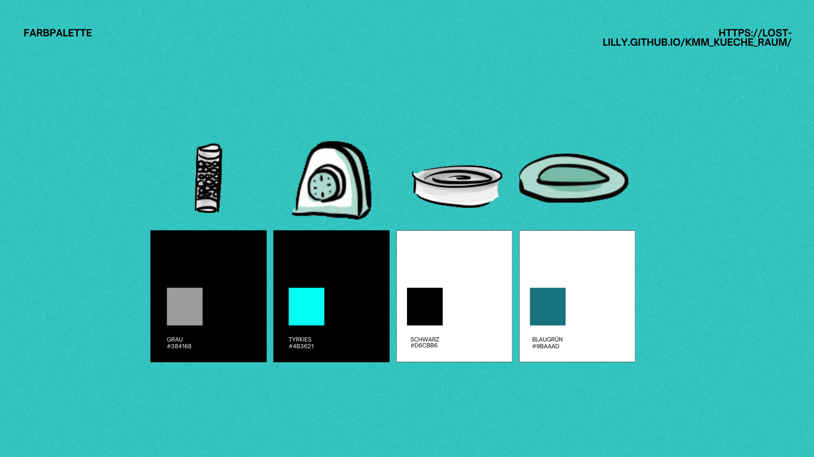
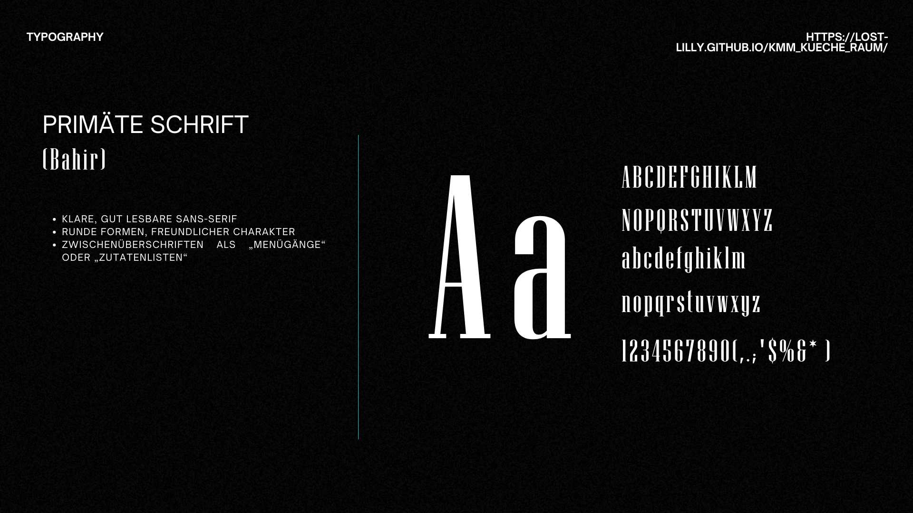
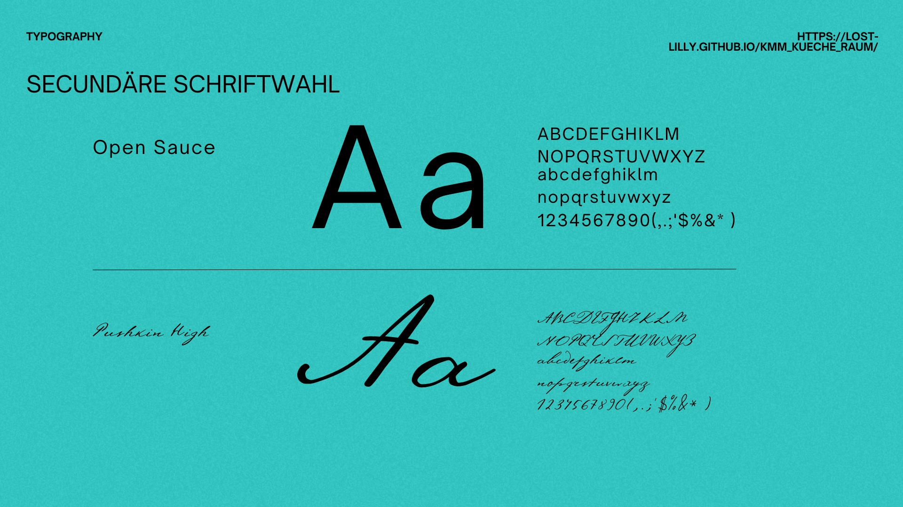
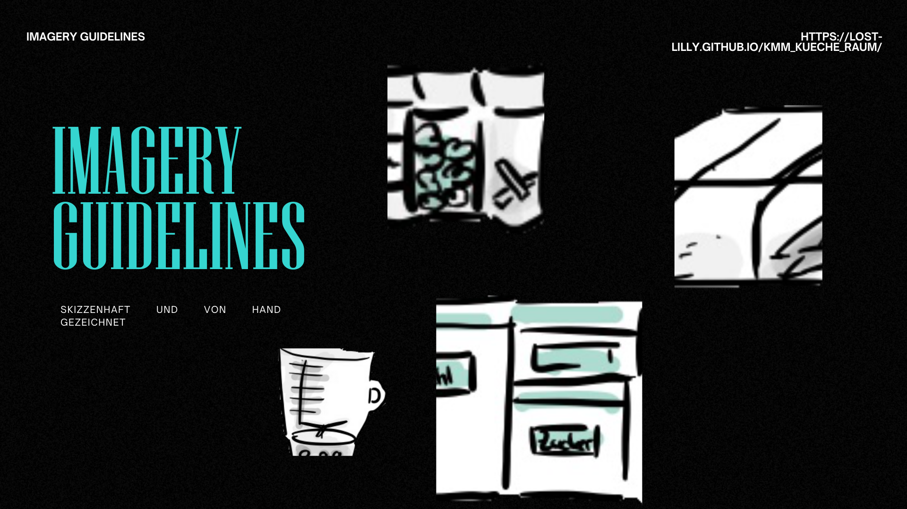
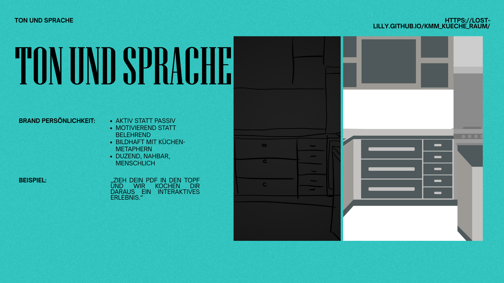

Interview
Interviewer: Warum haben Sie sich für das Studium Kommunikation und Medienmanagement entschieden?
Studentin: Ich habe mich schon immer für Medien, kreative Prozesse und strategische Kommunikation interessiert. Das Studium vereint all diese Bereiche perfekt.
Interviewer: Was gefällt Ihnen am meisten an Ihrem Studienalltag?
Studentin: Mir gefällt besonders die Kombination aus Praxisprojekten und theoretischen Grundlagen. Außerdem arbeite ich gerne im Team, was im Studium sehr häufig vorkommt.
Interviewer: Gibt es besondere Herausforderungen?
Studentin: Ja, vor allem das Zeitmanagement. Es gibt viele Projekte, Präsentationen und Gruppenarbeiten gleichzeitig. Man muss wirklich gut organisiert sein.
Interviewer: Welche beruflichen Ziele haben Sie nach dem Abschluss?
Studentin: Ich möchte gerne in eine Kommunikationsagentur gehen oder später im Bereich Social Media Management arbeiten. Kreativität und strategisches Denken zu verbinden, ist genau mein Ding.
Text im Konjunktiv 2
Die Studentin erzählte, sie habe sich für das Studium entschieden, weil sie sich schon immer für Medien, kreative Prozesse und strategische Kommunikation interessiert hätte. Das Studium vereine all diese Bereiche auf ideale Weise.
Sie meinte, am meisten würde ihr die Mischung aus Praxisprojekten und theoretischen Grundlagen gefallen. Besonders gerne würde sie im Team arbeiten, was im Studienalltag sehr häufig vorkäme.
Auf die Herausforderungen angesprochen, sagte sie, vor allem das Zeitmanagement wäre anspruchsvoll. Es gebe viele Projekte, Präsentationen und Gruppenarbeiten gleichzeitig, weshalb man sehr gut organisiert sein müsse.
Zu ihren Zukunftsplänen erklärte sie, sie würde nach dem Abschluss gerne in einer Kommunikationsagentur arbeiten oder später im Social Media Management tätig sein. Es mache ihr Freude, Kreativität mit strategischem Denken zu verbinden.

Funktionsdesign ist eine Standardisierungs- und Strukturierungsmethode für die Technische Dokumentation und Technische Kommunikation, welche auch bei Anleitungen eine besondere Rolle spielt.
Im Modul „IT-Grundlagen“ lernt man zentrale Bereiche der Informatik kennen. Dabei zeigt sich, dass Programmieren überall auftauchen kann, selbst dort, wo man es nicht erwartet, etwa in Word mit VBA, um Abläufe zu automatisieren.
Hier sind ein paar Benennungen, über welche man im Themenbereich zu Interkulturelle Kommunikation stolpern kann:
Fahre mit der Maus über die Buttons, um die Beschreibungen zu sehen.
Worte bedeuten – Typografie deutet. Die gleiche Aussage kann streng, verspielt, laut oder sachlich erscheinen, je nachdem, wie sie gesetzt wird.
Darstellung ist nicht Dekoration, sondern Teil der Botschaft. Form und Inhalt wirken immer gemeinsam.
Stelle dir ein Wort vor, das in verschiedenen Schriftarten erscheint:
→ streng • verspielt • laut • sachlich
Die Bedeutung bleibt – die Wirkung ändert sich.
Tipp: Klicke auf den Kasten oben – er fährt aus und zeigt dir die Antwort.
Wie wurde der Toaster erstellt? Hier ist eine Anleitung um schnell Illustrationen zu erstellen.
Grundlagen zu Tools, Methoden und Regeln, die dir während des gesamten Studiums begegnen. Du lernst, Medien professionell zu planen, zu gestalten und zu bewerten, immer mit Blick auf Verständlichkeit, Zielgruppe und rechtliche Rahmenbedingungen
Wie färbt man ein Objekt in Blender ein?
Fahre mit der Maus über die Punkte, um die Beschreibungen zu sehen.
Häufige Fehler beim Schreiben
Diese Fehler erschweren Lesbarkeit und den Aufbau mentaler Modelle. Mit Erkenntnissen der Verständlichkeits-, Leserlichkeits- und Textsortenforschung lassen sie sich systematisch erkennen und vermeiden.
Von kompliziert zu einfach – ohne Komplexität zu verlieren
Komplexe Inhalte können verständlich bleiben, wenn Informationsstruktur, Makro- und Mikrostruktur sowie Textsorte klar gewählt werden. Grundlage sind Verständlichkeitsmodelle, kognitionswissenschaftliche Ansätze und regelbasiertes Schreiben in der Technischen Kommunikation.
Tipps, wie man’s besser macht:
Das praktische Studiensemester verbindet Studium und Berufspraxis.
| Phase | Inhalte | Kompetenzen |
|---|---|---|
| Bewerbung | Unternehmen suchen, Unterlagen erstellen | Selbstorganisation, Professionalität |
| Praxis | Mitarbeit an Projekten | Team- und Fachkompetenz |
| Reflexion | Bericht, Präsentation | Wissenschaftliches Arbeiten |
Fahre mit der Maus über die Punkte, um die Beschreibungen zu sehen.